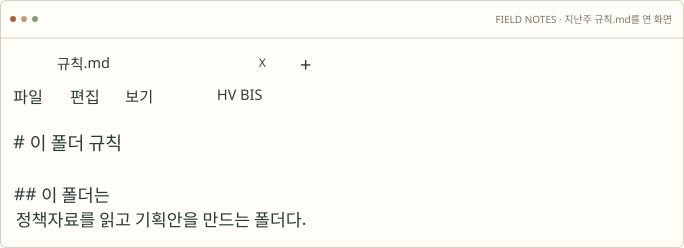
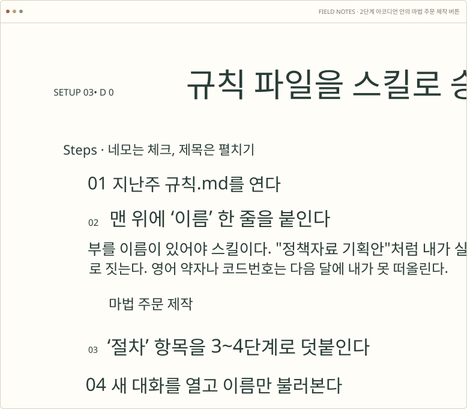
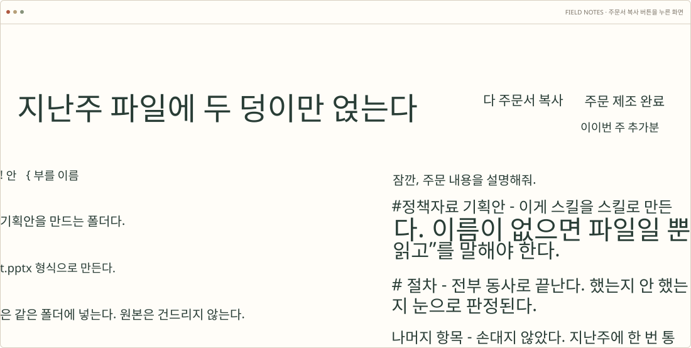
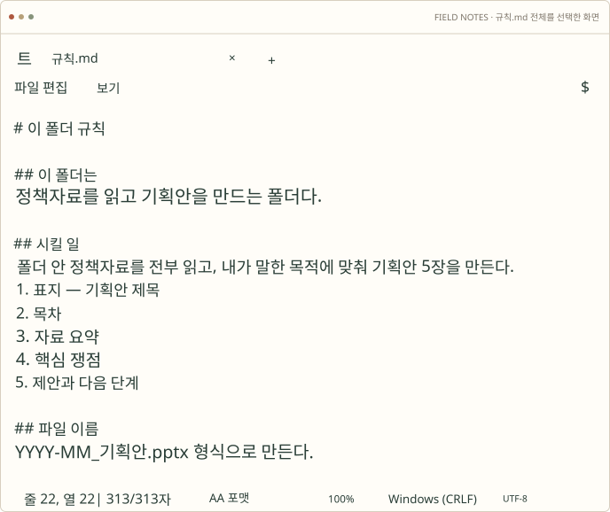
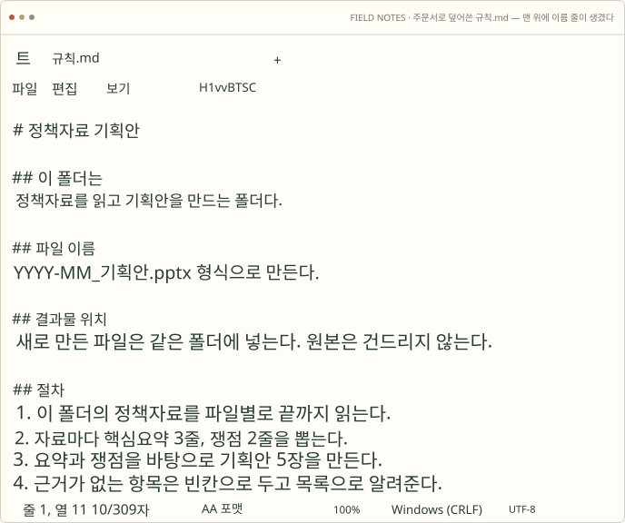
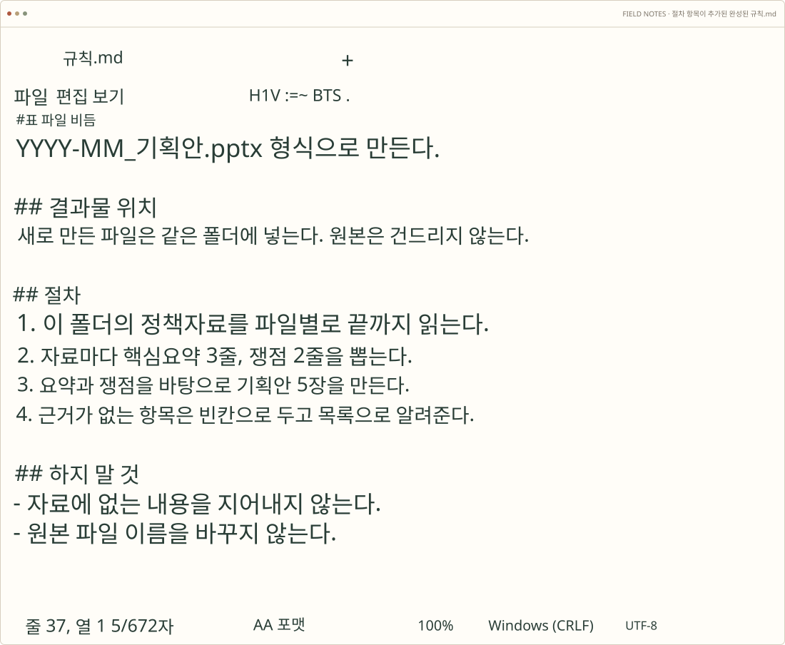
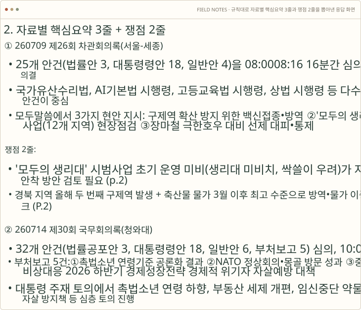
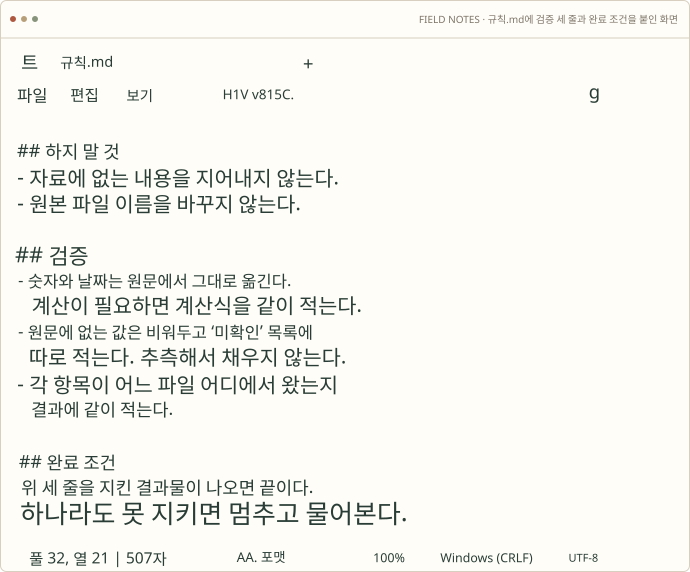

지난주에 붙인 두 칸이 아직 빛나고 있다. 다만 아우라는 옅다.
오인턴
“폴더도 연결했고 규칙도 적었는데… 왜 아직도 매번 처음부터 설명하고 있지?”
▼지난주에 붙인 두 칸이 아직 빛나고 있다. 다만 아우라는 옅다.
“폴더도 연결했고 규칙도 적었는데… 왜 아직도 매번 처음부터 설명하고 있지?”
▼페어리가 빈 칸 두 개를 가리킨다.
“지난주엔 함께 볼 수 있도록과 같은 말 뱉을 필요 없도록을 채웠어요.”
“남은 건 피드백 필요 없도록, 그리고 알아서 멈추도록이에요.”
▼“이번 주에도 두 개예요. 마지막엔 몬스터가 하나 나올 거고요.”
▼지난주에 만든 규칙.md 한 장. 새로 만들지 않고 그 위에 이어서 쓴다.
▼새 파일을 만들지 않는다. 지난주에 이미 통했던 규칙 위에 얹는 게 핵심이다. 새로 쓰면 지난주에 검증한 것이 날아간다.
이름은 이 절차 묶음을 부르는 말이다. “정책자료 기획안”처럼 내가 실제로 입 밖에 낼 말로 짓는다. 영어 약자나 코드번호는 다음 달에 내가 못 떠올린다.
동사로 끝나는 문장으로 쓴다. “깔끔하게 정리한다”는 절차가 아니라 형용사다. “표를 만든다”, “빈 항목을 목록으로 뺀다”처럼 했는지 안 했는지 판정되는 문장으로.
폴더를 연결해둔 대화에서 이 한 줄만 친다. 앞의 “규칙.md 읽고”가 파일을 펴게 하고, 뒤에 시킬 일을 붙인다. 이름을 지었으니 뒤가 「정책자료 기획안 해줘」 한 마디로 줄어든다.
절차를 다시 설명하고 싶은 충동을 참는 게 이 단계의 전부다. 덧붙이면 각인이 됐는지 확인할 수 없다.
파일을 펴라는 앞부분은 매번 붙인다. 규칙은 파일에 적혀 있을 뿐, 내가 먼저 펴보지 않으면 없는 것과 같기 때문이다.







# 정책자료 기획안 ← 부를 이름 ## 이 폴더는 정책자료를 읽고 기획안을 만드는 폴더다. ## 파일 이름 YYYY-MM_기획안.pptx 형식으로 만든다. ## 결과물 위치 새로 만든 파일은 같은 폴더에 넣는다. 원본은 건드리지 않는다. ## 절차 1. 이 폴더의 정책자료를 파일별로 끝까지 읽는다. 2. 자료마다 핵심요약 3줄, 쟁점 2줄을 뽑는다. 3. 요약과 쟁점을 바탕으로 기획안 5장을 만든다. 4. 근거가 없는 항목은 빈칸으로 두고 목록으로 알려준다. ## 하지 말 것 - 자료에 없는 내용을 지어내지 않는다. - 원본 파일 이름을 바꾸지 않는다.
# 정책자료 기획안 — 이 묶음에 이름을 붙이는 줄이다. 이 이름 하나로 아래 절차 전체를 부른다. 다만 “규칙.md 읽고”를 앞에 붙여야 파일이 펴진다.
## 절차 — 전부 동사로 끝난다. 했는지 안 했는지 눈으로 판정된다.
나머지 항목 — 손대지 않았다. 지난주에 한 번 통했으니 건드릴 이유가 없다.
각인은 새로 쓰는 게 아니라 잘 됐던 것 위에 얹는 것이다.
이름을 부르자, 오인턴이 말하지 않은 순서가 그대로 굴러간다.
“III번 칸 완료예요. 그런데 용사님, 방금 결과 확인하셨어요?”
“뭐. 잘 돌아가는데 굳이 봐야 되나.”
페어리가 작게 중얼거린다. “그 순간이 제일 위험한데.”
▼절차를 각인 시킨 지금, 가장 자주 출몰되는 몬스터다. 잘 도니까 확인을 안 하게 되고, 안 하는 동안 틀린 게 쌓인다.
완벽해 보이는 표 한 장이 날아든다. 숫자는 딱 떨어지고, 빈칸이 하나도 없다.
“…이거 다 맞는 거 맞아? 빈칸이 하나도 없는데.”
“그게 공격이에요. 원래 자료엔 쟁점이 안 드러난 게 세 개 있었어요.”
▼다음 장의 세 줄을 그대로 붙인다. 내 업무에 맞게 고칠 것은 거의 없다. 이 세 줄은 업무 종류와 상관없이 같은 구멍을 막는다.
무엇이 되면 끝인지를 적는다. 이게 없으면 계속 그럴듯한 걸 더 만들어낸다. 끝을 정하는 건 사람이 하는 일이고, 하네스에서 사람 몫이 제일 많이 남는 칸이다.
새 자료를 구할 필요 없다. 지난주에 이미 돌려본 그 정책자료를 그대로 다시 시킨다. 이번엔 검증 세 줄이 붙어 있으니 같은 자료인데 결과가 달라진다.
I·II·III번 칸은 잘 하게 만드는 장치다.
IV번 칸만 틀린 걸 알아채는 장치다.
앞의 셋만 있으면 빠르고 그럴듯하게 틀린다. 속도가 붙은 만큼 더 많이 틀린다.
그래서 순서상 마지막이지만, 안 붙이면 앞의 셋이 전부 무효다.

## 검증 - 숫자와 날짜는 원문에서 그대로 옮긴다. 계산이 필요하면 계산식을 같이 적는다. - 원문에 없는 값은 비워두고 ‘미확인’ 목록에 따로 적는다. 추측해서 채우지 않는다. - 각 항목이 어느 파일 어디에서 왔는지 결과에 같이 적는다. ## 완료 조건 위 세 줄을 지킨 결과물이 나오면 끝이다. 하나라도 못 지키면 멈추고 물어본다.
## 검증 · 1번 — 숫자를 “대충 맞게” 만드는 걸 막는다. 계산식을 남기게 하면 내가 검산할 수 있다.
## 검증 · 2번 — 제일 많이 당하는 공격이다. 빈칸이 없는 결과물은 의심부터 하는 게 맞다.
## 검증 · 3번 — 이 줄이 있어야 표본 대조가 30초 만에 끝난다. 없으면 확인 자체를 안 하게 된다.
마지막 “멈추고 물어본다”가 종료 조건이다. 이 한 줄이 하네스의 네 번째 칸이다.
다시 시킨 결과에는 빈칸이 세 개 있다. 그리고 그 아래에 ‘미확인’ 목록이 붙어 있다.
“빈칸이 생겼네요. 이게 이긴 거예요.”
“완벽해 보이는 결과물을 의심하게 된 순간, Mr.그럴듯은 물러납니다.”
▼하네스는 다 붙었다. 그런데 여전히 매번 내가 시작 버튼을 누르고 있다. 그게 다음 단계의 문제다.
NEXT · [스토리] 에이전트 설계하기 (1)
미션 A 챗봇과 에이전트의 차이를 1분 만에 체감
미션 B 나만의 시종 만들기
네 칸이 다 찼다. 아우라는 더 이상 깜빡이지 않는다.
“장비는 다 갖추셨어요. 다음 주엔 이걸 부릴 것을 만들 거예요.”
TO BE CONTINUED · WEEK 03
▼